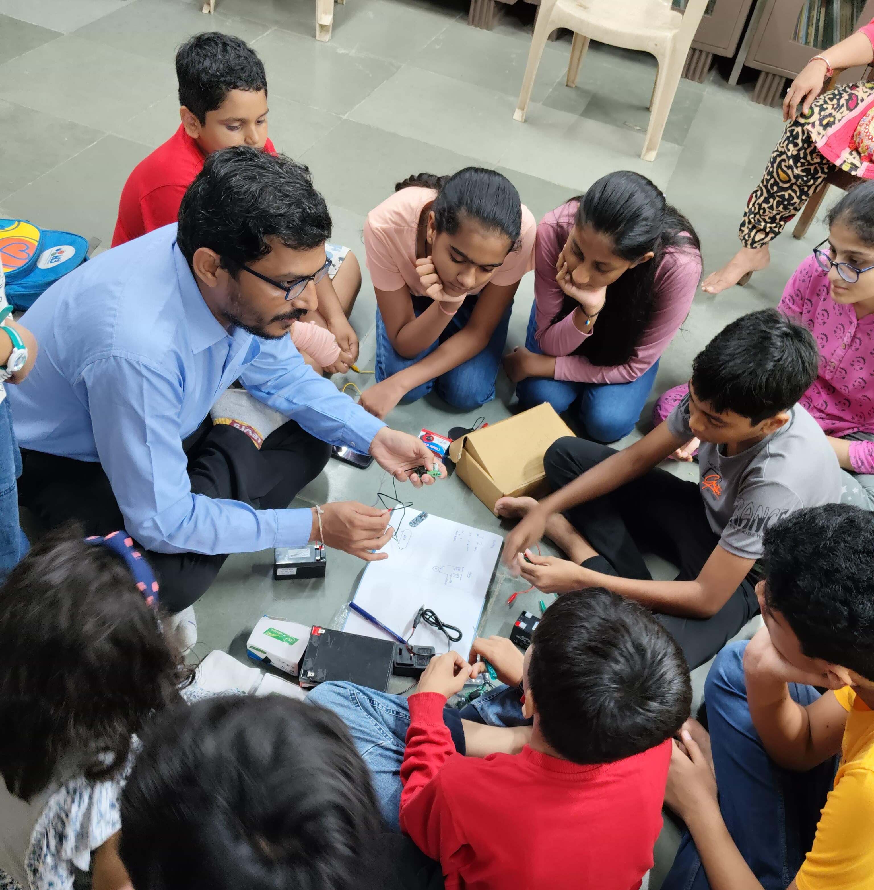

About Ahmedabad Tinkering Community
About the Community
Ahmedabad Tinkering Community is a part of Tinkering India, an initiative started by Dhruv Saidava, a well-known educator dedicated to community and ecosystem development across India and beyond.
Driven by the belief that innovation doesn’t require large setups with expensive machines, Dhruv emphasizes mindset-building at the grassroots level through scalable, hands-on learning ecosystems.
This community aims to engage children across Ahmedabad by creating micro tinkering ecosystems in apartments, neighborhoods, and local spaces, fostering a culture of creativity, problem-solving, and making. By connecting these dots across the city, Ahmedabad Tinkering Community is paving the way for a more inclusive and accessible maker movement.
Through workshops, collaborative projects, and knowledge-sharing sessions, we aim to empower individuals with the skills needed for the future.
Founder
Dhruv Saidava, the visionary behind Tinkering India, is a passionate innovator and educator dedicated to community-driven ecosystem development. With years of experience fostering curiosity, self-learning, and hands-on education, he has played a key role in democratizing the maker movement across India and beyond.
Believing that innovation starts with mindset, not machines, Dhruv emphasizes scalable micro-ecosystems over large, resource-heavy labs. His approach ensures that tinkering, digital fabrication, and problem-solving are accessible to students, educators, and makers regardless of their location or resources. By enabling localized, affordable innovation hubs, he empowers learners to explore STEM, robotics, AI, and electronics with minimal infrastructure.
Through Tinkering India, Dhruv has initiated the Ahmedabad Tinkering Community, which connects apartments, schools, and neighborhoods into a collaborative network of makers. This model fosters peer learning, mentorship, and real-world problem-solving, making innovation a part of everyday life. His vision extends beyond individual learning, aiming to build a nationwide ecosystem where creativity flourishes at the grassroots level.
By bridging gaps between education, technology, and entrepreneurship, Dhruv is shaping the future of hands-on learning and community-driven innovation, making the maker movement truly scalable, inclusive, and impactful.
SRISTI: Supporting Partner of Ahmedabad Tinkering Community
SRISTI Organization has graciously partnered with Ahmedabad Tinkering Community to provide a venue for its initiatives starting November 2024. As a key supporter, SRISTI is helping nurture a culture of innovation, creativity, and hands-on learning by offering a space where young minds can explore, tinker, and build.
Ahmedabad Tinkering Community is deeply grateful for SRISTI’s support in making this initiative more accessible and impactful. Their contribution plays a vital role in empowering children and makers across the city, fostering a scalable and sustainable ecosystem for grassroots innovation and learning.
Gallery